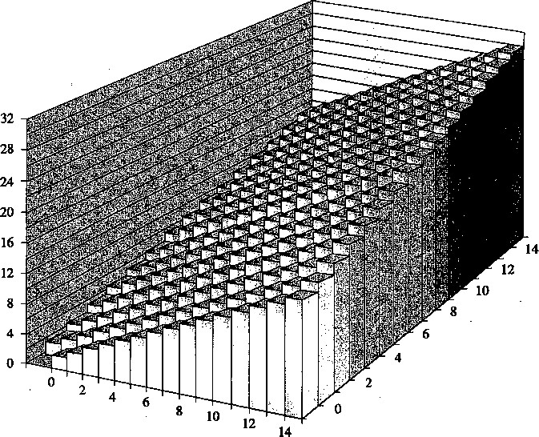
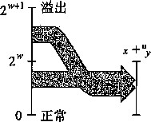
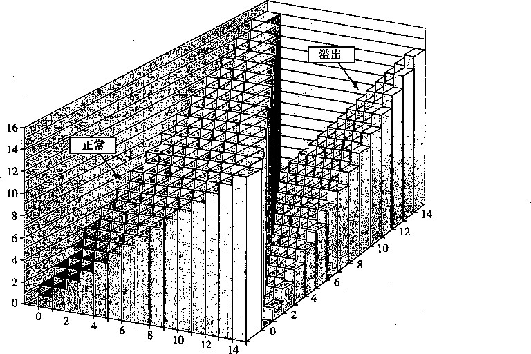
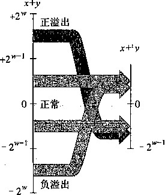
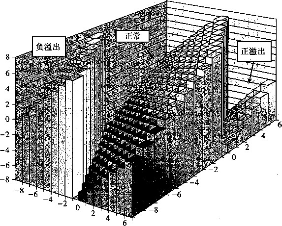
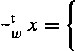

高位，我们就得到[0101],也就是十进制值的5。这就和值21 mod 16 = 5—致。
图2-20整数加法。对于一个4位的字长，其和可能需要5位
.一般而言，我们可以看到，如果;c+y<2 w ,则和的w+1位表示中的最高位会等于0,因此 丢弃它不会改变这个数值。另一方面，如果2 W < 则和的w+1位表示中的最高位会
等于1，因此丢弃它就相当于从和中减去了 2'图2-21说明了这两种情况。这样会得到一个范 围0<尤+;；-^<2# 1 -2” = 2”中的值，刚好等于jc与;；的和模广的结果。现在定义参数x和 少的运算+二 j^MO < x,y<2 w , 如下：
X 〜… <2W ^ (2-11)
w \x + y-2 w , 2 W <x + y< 2 W+1 这正好是在C中执行两个w位无符号数值加法时得到的结果。

图2-21整数加法和无符号加法间的关系。当;c+j；大于2 W -1时，其和溢出
一个算术运算溢出，是指完整的整数结果不能放到数据类型的字长限制中去。如等式 (2-11)所示，当两个运算数的和为2 W 或者更大时，就发生了溢出。图2-22展示了字长w = 4的 无符号加法函数的坐标图。这个和是按模2 4 =16计算的。当;r+;；<16时，没有溢出，并且jc+ 4 u y 就是x+y,这对应于图中标记为“正常”的斜面。当16时，加法溢出，结果相当于从和 中减去16,这对应于图中标记为“溢出”的斜面。

图2-22无符号加法（4位字长，加法是模16的）
当执行C程序时，不会将溢出作为错误而发信号。不过有的时候，我们可能希望判定是否 发生了溢出。比如，假设计算+ 并且我们想要判定r是否等于；c+y。我们声称当且仅当
没<x (或者等价地sC;；)时，发生了溢出。要明白这一点，请注意因此如果^没有 溢出，我们能够肯定另一方面，如果s确实溢出了，我们就有FX + yj'假设少<2' 我们就有y —2 W <0,因此5 = <+(少一2")<1在前面的示例中，我们看到9+ 4 u 12=5。由于 5 <9,我们可以看出发生了溢出。
_练习题2.27写出一个具有如下原型的函数：
/* Determine whether arguments can be added without overflow */ int uadd_ok(unsigned x, unsigned y);
如果参数x和y相加不会产生溢出，这个函数就返回1。
尤， ^ = ° (2-12)
2 W -X 9 X>0
模数加法形成了一种数学结构，称为阿贝尔群（Abelian group),这是以丹麦数学家Niels Henrik Abel (1802〜1829)的名字命名。也就说，它是可交换的（这就是为什么叫“abelian” 的地方）和可结合的。它有一个单位元0,并且每个元素有一个加法逆元。考虑w位的无符号数 的集合，执行加法运算对于每个值X，必然有某个值-满足-：U+；>=0。当；c = 0时，加 法逆元显然是0。对于；c>0,考虑值2 w -x。我们观察到这个数字在0<2”-1<2”范围之内，并 且(x + 2 w -尤)111()(12〜=2^111()(12^ = 0。因此，它就是;c在+；：下的逆元。这两种情况就导出了对于 0<x<2 w 的等式 ：
—u r — w X -
®练习题2.28我们能用一个十六进制数字来表示长度w=4的位模式。对于这些数字的无符号解释，
, 使用等式(2-12)填写下表,给出所示数字的无符号加法逆元的位表示（用十六进制形式)。
X |
—> |
||
十六进制 |
十进制 |
十进制 |
十六进制 |
0 |
|||
5 |
|||
8 |
|||
D |
|||
F |
|||
2.3.2补码加法
对于补码加法，我们必须确定当结果太大（为正)或者太小（为负）时,应该做些什么。给 定在范围—2 W-1 < x，< 2 w ~ l -l 之内的整数值x和少，它们的和就在范围-2 W < jc + < T-2 之 内，要想准确表示，可能需要位。就像以前一样，我们通过将表示截断到w位，来避免数 据大小的不断扩张。然而，结果却不像模数加法那样在数学上感觉很熟悉。
两个数的w位补码之和与无符号之和有完全相同的位级表示。实际上，大多数计算机使用 同样的机器指令来执行无符号或者有符号加法。因此，我们能够定义字长为w的、运算数x和 上的补码加法U和;;满足-2旷 1 <孓少< 2"- 1 ),表示为+ :：
X y = U2T w (T2U w (x) T2U w (y)) . (2-13)
根据等式（2-5),我们可以把：T2t/ w (;c)写成;+ 把r2C/ w (y)写成;vf+3；。使用属
性，即+ w u 是模2 W 的加法，以及模数加法的属性，我们就能得到:
x = U2T w (T2U w (x) +: T2U w (y))
= U2T w [(x w _{l w + x + u2出 + y) mod 2 W ]
= U2T w [{x .+ y) mod 2^]
消除了 xn2 w 和这两项，因为它们模2 W 等于0。
为了更好地理解这个数量，定义z为整数和gjc+h f为z’hmod 2 w ，而z"为 数值z”等于;c+>。我们分成4种情况分析，如图2-23所示。
情况3
情况2

T+2 w_1
图2-23整数和补码加法之间的关系。当x+j； 小于一时，产生负溢出。当它大 于2 W_1 +1时，产生正溢出
-2 w <z< -2 W - 1 0 然后，我们会有f = z+2 w 0
检查等式（2-8),
我们看到z’在满足的范围之内。这种情况称 为负溢出（negative overflow)。我们将两个负数x 和少相加（这是我们能得到z < -2"- 1 的唯一方式)，
得到一个非负的结果z”=x +对2'
-2〜<2<0。那么，我们又将有z’= z+2 w ,得到-2^+2^2 1 ^ 1 < ^ < 2' 检査等式 (2-8),我们看到z'在满足z”=z' -2 W 的范围之内，
因此2”=2'-2”=2 + 2〜一2^2。也就是说，我们的 补码和Z”等于整数和X +7。
0 < z < 那么，我们将有f = z，得到
<^< 2 w -\ 因此z"=y=z。补码和z"又等于整 数和x+7。
2^<2<2'我们又将有得到 2一<2'<2'但是在这个范围内，我们有z"= z f -2 w f 得到z"=x+;;-2 w 。这种情况称为正溢出（positive overflow)。我们将正数jc和相加（这 是我们能得到z > 2- 1 的唯一方式)，得到一个负数结果-2'
通过前面的分析可以证明，范围在-2“ -1之内的；c和j；实施运算+丨时，我
们有下面这样的式子
x + y-2 w , 正溢出
(2-14)
jc + y， -2 w - 1 <x-^y<2 w ~ 1 正常
^ + ^ + 2^, x + >；<-2 w — 1 ： 负溢出
图2-24展示了一些4位补码加法的示例作为说明。每个示例的情况都被标号为对应于等式 (2-14)的推导过程中的情况。注意2 4 =16,因此负溢出得到的结果比整数和大16,而正溢出得 到的结果比之小16。我们包括了运算数和结果的位级表示。可以观察到，能够通过对运算数执 行二进制加法并将结果截断到4位，从而得到结果。
X |
y |
x +y |
情况 |
|
-8 |
• — 5 |
-13 |
3 |
1 |
[1000] |
[1011] |
[10011] |
[0011] |
|
-8 |
-8 |
一 16 |
0 |
1 |
[1000] |
[1000] |
[10000] |
[0000] |
|
-8 |
5 |
一 3 |
-3 |
2 |
[1000] |
[0101] |
[11101] |
[1101] |
|
2 |
5 |
7 |
7 |
3 |
[0010] |
[0101] |
[00111] |
[0111] |
|
5 |
5 |
10 |
—6 |
4 |
[0101] |
[0101] |
[01010] |
[1010] |
图2-24补码加法示例。通过执行运算数的二进制加法并将结果截断到4位，
可以获得4位补码和的位级表示
图2-25阐明了字长w = 4的补码加法。运算数的范围为一8〜7。当；c+;；<—8时，补码加 法就会负溢出，导致和增加了 16。当-8<jc+7<8时，加法就产生x+少。当jc+y>8,加法 就会正溢出，使得和减少了 16。这三种情况中的每一种都形成了图中的一个斜面。
等式（2-14)也让我们认出了哪些情况下会发生溢出。当x和y都是负数，但是 尤+：^>0时，我们就会得到负溢出。当x和7都是正数，但是时，我们会得 到正溢出。
®练习题2.29按照图2-24的形式填写下表。分别列出5位参数的整数值、整数和的数值、补码和的数 值、补码和的位级表示，以及属于等式（2-14)推导中的哪种情况。
X |
y |
x+y |
情况 |
|
[10100] |
[10001] |
|||
[11000] |
[11000] |
|||
[10111] |
[01000] |
|||
[00010] |
[00101] |
|||
[01100] |
[00100] |
_练习题2.30写出一个具有如下原型的函数:
/* Determine whether arguments can be added without overflow */ int tadd_ok(int x, int y);
如果参数X和y相加不会产生溢出，这个函数就返回1。
_练习题 2.31你的同事对你补码加法溢出条件的分析有些不耐烦了，他给出了一个函数tadd一 ok的 实现，如下所示：
/* Determine whether arg\xments can be added without overflow */ /* WARNING: This code is buggy. */• int tadd_ok(int x, int y) { int sum = x+y;
return (sum-x == y) && (sum-y == x);
你看了代码以后笑了。解释一下为什么。
练习题 2.32你现在有个任务，编写函数t SU b_ok的代码，函数的参数是x和y,如果计算x-y不 产生溢出，函数就返回1。假设你写的练习题2.30的代码如下所示 ：.
/* Determine whether argnmeirts can be subtracted without overflow */ /本 WARMING: This code is buggy. */ int tsub_ok(int x, int y) { return tadd_ok(x, ~y);
>
x和y取什么值时，这个函数会产生错误的结果？写一个该函数的正确版本（家庭作业2.74)。

图2-25补码加法（字长为4位的情况下，当;8时，产生负溢出；8时，会产生正溢出） 2.3.3补码的非
我们可以看到范围在<2〜中的每个数字;c都有+丨下的加法逆元。首先，对于 x ^ -2"- 1 ,我们可以看到它的加法逆元就是ic。也就是，
—x + x = 0。另一方面，对于^ = = - 1 = 2^ 1 不能表示为一个w位的数。我们声明，
这个特殊值本身就是它在+丨下的加法逆元。-2^+:^2^ 1 的值由等式（2-14)的第三种情况给 出，因为+—2“ = 一2'最后得出= + 从这个分析中，我们可以
定义对于范围-2 W_1 < x<2 w_1 内的x,补码的非运算（negationoperation) -丨如下：

2 W ~\ x = - 2 W ' —x, x > — 2 W '
(2-15)
_练习题2.33我们可以用一个十六进制数字来表示长度w=4的位模式。根据这些数字的补码的解释， 填写下表，确定所示数字的加法逆元。
X |
~4 X |
||
十六进制 |
十进制' |
十进制 |
十六进制 |
0 |
|||
5 |
|||
8 |
|||
D |
|||
F |
|||
对于补码和无符号（见练习题2.28)非（negation)产生的位模式，你观察至! |
什么？ |
||
网络旁注DATA ： TNEG ：补码非的位级表示
计算一个位级表示的值的补码非有几种聪明的方法。这些技术；f艮有用（例如当你在调试程序 的时候遇到值Oxfffffffa),同时它们也能够让你更了解补码表示的本质。
行位级补码非的第一种方法是对每一位求补，再对结果加1。在C语言中，我们可以确定, 对于任意整数值x,计算表达式-x和〜x+1得到的结果完全一样。
下面是一些字长为4的示例：
incri-x)
I t u u u
--=-
-
1 1 o o o 1 o o o o o o 1 o o
1 X ix ix [[[rL rL
[0l0l]
[Olll]
[IlOO]
[0000]
[10QQ]
r
J
i -■
i
u u u
o 1 1 1
o 1 1 1
CD o 1 1
.1 o 1 X o rL rL rL [ rL
从前面的例子我们知道Oxf的补是0耳0,而Oxa的补是0x5,因而Oxfff f f ffa是—6的 补码表示。
计算一个数x的补码非的第二种方法是建立在将位向量分为两部分約基础之上的。假设灸是 最右边的1的位置，因而x的位级表示形如1，0，…，0]。（只要x关0就能够找 到这样的奴）这个值的非写成二进制格式就是…，〜1，0，…，0]。也就是，我们对 位位置A左边的所有位取反。
我们用一些4位数字来说明这个方法,这里用斜体来突出最右边的模式1, 0, •••,():
4 8 5 7
-I I
甽叫切0./] 7 0 0 0
o 7 .1. .1
-4-85 7 ^ ^ 0 0 o 1 [1^§,[01[01
2.3.4无符号乘法
范围在0 < < 2 w -\ 内的整数；c和;;可以表示为w位的无符号数，但是它们的乘积;c
的取值范围为0到(211^ = 2^-2^+1之间。这可能需要2w位来表示。不过，C语言中的无符 号乘法被定义为产生w位的值，就是2w位的整数乘积的低w位表示的值。根据等式（2-9),这 可以看作等价于计算乘积模2 W 0 因此，w位无符号乘法运算* :的结果为：
x = (x - y) mod 2 W (2-16)
2.3.5补码乘法
范围在-2— 内的整数jc和可以表示为w位的补码数字，但是它们的乘
积尤7的取值范围在—2 W_1 • (2^-1) = 一 2.2+2^ 1 和 一 2 W_1 . -2 w ~ l = -2 2w ~ 2 之间。要用补码来表
示这个乘积，可能需要2w位——大多数情况下只需要2w-1位，但是特殊情况2 2w — 2 需要2w位 (包括一个符号位0)。然而，C语言中的有符号乘法是通过将2w位的乘积截断为w位的方式实 现的。根据等式（2-10), w位的补码乘法运算* I 的结果为：
x* i w y=U2T w ((x-y)mod2 w ) (2-17)
我们认为对于无符号和补码乘法来说，乘法运算的位级表示都是一样的。也就是，给定长度 为W的位向量5和夕，无符号乘积似： B2U w {y) 的位级表示与补码乘积於r w (J)* lB2T w (y) 的位级表示是相同的。这表明机器可以用一种乘法指令来进行有符号和无符号整数的乘法。
举例说明，图2-26给出了不同3位数字的乘法结果。对于每一对位级运算数，我们执行无 符号和补码乘法，得到6位的乘积，然后再把这些乘积截断到3位。无符号的截断后的乘积总是 等于;mod 8。虽然无符号和补码两种乘法乘积的6位表示不同，但是截断后的乘积的位级表 示都相同。
模式 |
X |
y |
x'y |
截断的 |
||||
无符号 |
5 |
[101] |
3 |
[011] |
15 |
[001111] |
7 |
[HI] |
补码 |
-3 |
[101] |
3 |
[011] |
-9 |
[110111] |
-1 |
[HI] |
无符号 |
4 |
[100] |
7 |
[HI] |
28 |
[011100] |
4 |
[100] |
补码 |
-4 |
[100] |
-1 |
[HI] |
4 |
[000100] |
-4 |
[100] |
无符号 |
3 |
[011] |
3 |
[on] |
9 |
[001001] |
1 |
[001] |
补码 |
3 |
[011] |
3 |
[on] |
9 |
[001001] |
1 |
[001] |
图2-26 3位无符号和补码乘法示例（虽然完整的乘积位级表示相同，
但是截断后的乘积的位级表示都相同）
为了说明（无符号和补码）乘积的低位是相同的，设;c=527；(3E)和;;=幻7；(刃是这些位模 式表示的补码值，而x'=52C/ w (30和户52似刃是这些位模式表示的无符号值。根据等式（2-5), 我们有Ax+W和；计算这些值的乘积模2〜得到以下结果：
(x f . /) mod 2 W = [(x + x w _ x 2 w ) • ( 3 ； + y w ^2 w )] mod 2 W
= [x^y + {x w _ x y + y w -ix)2 w + mod 2 W (2-18)
= 0 c • y) mod 2 W
由于模运算符，所有带有权重2 W 的项都丢掉了，因此我们看到JC7和的低w位是相同的。
®练习题2.34按照图2-26的格式填写下表，说明不同的3位数字乘法的结果。
模式 |
X |
y |
x -y |
截断的 |
无符号 |
[100] |
[101] |
||
补码 |
[100] |
[101] |
||
无符号 |
[010] |
[in] |
||
补码 |
[010] |
[in] |
||
无符号 |
[110] |
[110] |
||
补码 |
[110] |
[110] |
我们可以看出， w 位数字上的无符号运算和补码运算是同构的 - 级上有相同的结果。
4算+ 二、一二、和 +二 在位
_ 练习题 2.35 给你一个任务，开发函数 出。下面是你的解决方案：
/* Determine whether arguments can be multiplied without overflow */ int tmult_ok(int x, int y) { int p = x*y;
/* Either x is zero, or dividing p by x gives y */ return !x I I p/x == y;
}
你用x和y的很多值来测试这段代码，似乎都工作正常。你的同事向你挑战，说如果我不能用减 法来检验加法是否溢出（参见练习题2.31),那么你怎么能用除法来检验乘法是否溢出呢？ ”
按照下面的思路，用数学推导来证明你的方法是对的。首先，证明x = 0的情况是正确的。另外，考虑 w位数字X U关0)、；；、p和分，这里;7是X和少补码乘法的结果，而0是P除以X的结果。
1•说明x和y的整数乘积X7,可以写成这样的形式•少=；7+/r，其中/关o当且仅当p的计算溢出。 2•说明可以写成这样的形式：p = x •分 + r，其中M<W。
3•说明0=少当且仅当r = f = 0。
_练习题2.36对于数据类型int为32位的情况，设计一个版本的tmult_ok函数（见练习题2.35), 要使用64位精度的数据类型long long,而不使用除法。
XDR库中的安全漏洞
2002年，人们发现Sun Microsystems公司提供的实现XDR库的代码有安全漏洞，XDR库 是一个广泛使用的程序间共享数据结构的工具，造成这个安全漏洞的原因是程序会在毫无察觉的 情况下产生乘法溢出。
包含安全漏洞的代码与下面所示类似：
1 /*
* Illustration of cod^ vulnerability similar to that found in
* Sun's XDR library.
*/
void* copy.elements(void *ele_src[], int element, size 一 t ele_size) {
/*
* Allocate buffer for element objects, each of ele_size bytes
* and copy from locations designated by ele_src
*/
void ^result = malloc (ele_.cnt * ele_size);
if (result == NULL)
/* malloc failed */
return NULL;
void *next = result;
int i;
for (i = 0; i < element; i++) {
/* Copy object i to destination */
memcpy(next, ele^src[i], ele_size);
/* Move pointer to next memory region */
next += ele_size;
>
return result;
>
為数copy一elements的设计可以将ele一cnt个数据结构复制到第10行的函数分配的缓冲区 中，每个数据结构包含ele_size个字节。需要的字节数是通过计算ele_cnt*ele—size得到的。
想象一下， 一 个怀有恶意的程序员用参数ele_cnt等于1 048 577 (2 20 + 1). ele_size等 于4096 (2 12 )来调用这个函数。然后第10行上的乘法会溢出，导致只会分配4096个字节 ， 而不 是装下这些数据所需要的4 294 971 392个字节。从第16行开始的循环会试图复制所有的字节，超 越已分配的缓冲区的界限，因而破坏了其他的数据结构。这会导致程序崩溃或者行为异常。
几乎每个操作系统都使用了这段Sun的代码，像Internet Explorer和Kerberos验证系统这样 使用广泛的程序都用到了它。计算机紧急响应组（Computer Emergency Response Team, CERT), 卡内基—梅隆软件工程协会（Carnegie Mellon Software Engineering Institute)运行的一个追踪安 全漏洞或失效的组织，发布了建议“CA-2002-25”，于是许多公司急忙对它们的代码打补丁。幸 运的是，还没有由于这个漏洞引起的安全失效的报告。
库函数calloc的实现中存在着类似的漏洞。这些已经被修补过了。
_练习题2.37现在你的任务是修补上述XDR代码中的漏洞。你决定将待分配字节数设置为数据类型
long long unsigned,来消除乘法溢出的可能性（至少在32位机器上）。你把原来对malloc函 数的调用（第10行）替换如下：
long long unsigned asize =
ele_cnt * (long long unsigned) ele_size; void *result = malloc(asize);
这段代码在原始代码基础上有了哪些改进？
假设数据类型size_t和unsigned int是一样的，并且都是32位长，你该如何修改代码来消除 这个漏洞？
乘以常数
在大多数机器上，整数乘法指令相当慢，需要10个或者更多的时钟周期，然而其他整数运 算（例如加法、减法、位级运算和移位）只需要1个时钟周期。因此，编译器使用了一项重要的 优化，试着用移位和加法运算的组合来代替乘以常数因子的乘法。首先，我们会考虑乘以2的幂 的情况，然后再概括成乘以任意常数。
设;c为位模式[〜吣，‘_ 2 ，…，〜]表示的无符号整数。那么，对于任何A:>0,我们都认为 ^^，^^，…，^，(^…，(^给出了“的位级表示，这里右边增加了 A个0。这个属性可以通过等式 (2-1)推导出来：
W—1
w+k([. x w—b x w—2^ •••，又0，0，•••， °]) 二 D 乂严 '
i=0
'w-1 -
=.2'
' -i=0 .
= x2 k
对于A<w,我们可以将移位后的位向量截断到长度w,得到…，x Q ，0，…，0]。根 据等式（2-9),这个位向量的数值为x2 A mod2 w = x*：2 A 。因此，对于无符号变量x, C表达 式x«k等价于x*pwr2k,这里pwr2k等于2 k 。特别地，我们可以用lU«k来计算pwr2k。
通过类似的推理，我们可以得出，对于一个位模式为…，;c。]的补码数；c,以及范围 在0 < A:< w内任意的LA:,位模式…，知，0，…，0]就是:的补码表示。因此，对于 有符号变量x, C表达式x«k等价于x * pwr2k,这里pwr2k等于2&。
注意，无论是无符号运算还是补码运算，乘以2的幂都可能会导致溢出。结果表明，即使溢 出的时候，我们通过移位得到的结果也是一样的。
由于整数乘法比移位和加法的代价要大得多，许多C语言编译器试图以移位、加法和减法 的组合来消除很多整数乘以常数的情况。例如，假设一个程序运含表达式x*14。利用等式14 == 2 3 + 2 2 + 2\ 编译器会将乘法重写为（x<<3> + (x<<2) + (x<<1), 实现了将一个乘法替换为三个 移位和两个加法。无论x是无符号的还是补码，甚至当乘法会导致溢出时，两个计算都会得到 一样的结果。（根据整数运算的属性可以证明这一点。）更好的方法是，编译器还可以利用属性 14 = 2 4 -2 ! , 将乘法重写为（ x«4>-(x«l), 这时只需要两个移位和一个减法。
關练习题2.38就像我们将在第3章中看到的那样，LEA指令能够执行形如（a«k)+b的计算，这里 k等于0、1、2或3,而b等于0或者某个程序值。编译器常常用这条指令来执行常.数因子乘法。例如， 我们可以用（a«l)+a来计算3*a。
考虑b等于0或者等于a、k为任意可能的值的情况，用一条LEA指令可以计算a的哪些倍数？ 归纳一下我们的例子，考虑一个任务，对于某个常数 [ 的表达式 x*A ：生成代码。编译器会 将 ii ：的二进制表示表达为一组 0 和 1 交替的序列：
[(0…0)(1 …1) (0-0)-(1-1)].
例如， 14 可以写成 [(0...0)(111)(0)] 。 考虑一组从位位置《到位位置 m 的连续的 1 (« > m)o ( 对于 14 来说，我们有 W = 3 和 m=l 。）我们可以用下面两种不同形式中的一种来计算这些位对 乘积的影响：
形式 A: (x«n) + (x««—1) + ••• + (x«m)
形式 B: (x«n+l) - (x«m)
把每个这样连续的 1 的结果加起来，不用做乘法，我们就能计算出当然，选择使甩 移位、加法和减法的组合，还是使用一条乘法指令，取决于这些指令的相对速度，而这些是与机 器高度相关的。大多数编译器只在需要少量移位、加法和减法就足够的时候才使用这种优化。
_练习题2.39对于位位置《为最高有效位的情况 ， 我们要怎样修改形式B的表达式？
练习题2.40对于下面每个尺的值，找出只用指定数量的运算表达x*i：的方法，这里我们认为加法 和减法的开销相当。除了我们已经考虑过的简单的形式A和B原则，你可能会需要使用一些技巧。
K |
移位 |
加法/减法 |
表达式 |
6 |
2 |
1 |
|
31 |
1 |
1 |
|
一 6 |
2 |
1 |
|
55 |
2 |
2 |
議 练习题2.41对于一组从位位置”开始到位位置m结束的连续的1 (n > m),我们看到可以产生两
种形式的代码，A和B。编译器该如何决定使用哪一种呢？
除以 2 的幂
在大多数机器上，整数除法要比整数乘法更慢——需要30个或者更多的时钟周期。除以2 的幂也可以用移位运算来实现，只不过我们用的是右移，而不是左移。无符号和补码数分别使用 逻辑移位和算术移位来达到目的。
整数除法总是舍入到零。对于;c >0.和广>0,结果是L<y」，这里对于任何实数a, Ld定义 为唯一的整数a’，< a<a f +U 例如，L3.14j=3,卜3.14」=一4,而|_3」=3。
考虑对一个无符号数执行逻辑右移&位的效果。我们认为这和除以有一样的效果。例如， 图2-27给出了在12 340的16位表示上执行逻辑右移的结果，以及对它执行除以1、2、16和 256的结果。从左端移入的0以斜体表示。我们还给出了如果用真正的运算去做除法得到的结 果。这些示例说明，移位总是舍入到零，这一结果与整数除法的规则一样。
为了证明逻辑右移和除以2的幂之间的关系，设x为位模式[〜4〜_ 2 ，…，M表示的无符号 整数，而*的取值范围为0<^< w。设X’为w—H立的位表示[工^，‘_ 2 ，…，;cj的无符号数，而;c" 为H立的位表示[义^，…，;c 0 ]的无符号数。我们有Y = L^」。证明如下：
根据等式（2-1),我们有$ = 1:= 4，, = 和广= 因此，我们可
以把;c写为;c = 2 V+x"。可以观察到 0 ( 1 ,,( 1 : 32 ,.= 2 (- 1 ,因此 0 <x"<^ 这意(**1^2 & 」=0。 因此，b#」 =lx'+x u /2 k j = [x f, /2 k j= 分。
对位向量[Xh，〜_ 2 ，…，x。]逻辑右移 k 位会得到位向量
[0，“*，0， X w -i, X w _2，".，
这个位向量有数值X'。因此，对于无符号变量；c, C表达式x»k等价于 x /pwr2k,这里pwr2k 等价于.
k |
»k (二进制） |
十进制 |
12340/2 k |
0 |
0011000000110100 |
12340 |
12340.0 |
1 |
0001100000011010 |
6170 |
6170.0 |
4 |
001100000011 |
771 |
771.25 |
8 |
00^^000110000 |
48 |
48.203125 |
图2-27无符号数除以2的幂
现在考虑对一个补码数进行算术右移的结果。对于一个正整数，最高有效位为0,所以效果 与逻辑右移是一样的。因此，对于非负数来说，算术右移&位与除以2 A 是一样的。作为一个负 数的例子，图2-28给出了对-12 340的16位表示进行算术右移不同位数的结果。正如我们能看 到的，结果与除以2的幂几乎完全一样。对于不需要舍入的情况a =i),结果是正确的。但是 当需要进行舍入时，移位导致结果向下舍入，而不是像规则需要的那样向零舍入。例如，表达 式-7/2应该得到-3,而不是-4。
k |
»k (二进制） |
十进制 |
-i2340/2 k |
0 |
1100111111001100 |
-12340 |
-12340.0 |
1 |
7110011111100110 |
-6170 |
-6170.0 |
4 |
7777110011111100 |
—772 |
-771.25 |
8 |
""""11001111 |
-49 |
-48.203125 |
图2-28进行算术右移
让我们更好地理解算术右移的效果，以及如果利用它来执行除以2的幂。设;c为位模式 …，;c 0 ]表示的补码整数，而A：的取值范围为0 < A:< W。设f为W—H立(Xv-1，…， 表示的补码数，而X”为低A位[&+…，；C。]表示的无符号数。与分析无符号情况类似，我们 有;C = 2V+JC”，而0<x”<f,得到;c’ = |_W」。进一步，可以观察到，算术右移位向量 x w _ 2 ，…， x 0 ] k 位，得到位向量
IXv-l,…， X w-\ f X w-lf x w-2f*** f X kl
它刚好就是将X w _ 2 , •••, xj从位符号扩展到w位。因此，这个移位后的位向量就 是LW」的补码表示。这个分析证实了我们从图2-28的示例中发现的结论。
对于；0 0，或是不需要舍入的时候U” = 0)，我们的分析表明这个移位的结果就是所期望 的值。不过，对于；c<0和;;>0,整数除法的结果应该是[V/|,这里，对于任何实数a, M被 定义为使得〃’-的唯一整数V。也就是说，整数除法应该将为负的结果向上朝零舍入。 因此，当有舍入发生时，将一个负数右移A位不等价于把它除以这个分析也证实了我们从图 2-28的示例中发现的结论。
我们可以在移位之前“偏置”（biasing)这个值，通过这种方法修正这种不合适的舍入。 这种技术利用的属性是：对于整数;c和任意少>0的;;，有[yyl = L0c + 7-l)O」。例如，
{^r
当 JC = 一30 且;;=4,我们有;C+3； — 1=—27,而「一30/41 = —7 = L—27/4」。当 x = —32 且少 = 4 时， 我们有x + ;； - 1 = -29,而「-32/41 = 一8 =[_-29/4」。通用的方式表达这个关系，假设jc =紗+ r, 这里 %3\ (x+y— l)ly-k+{r^y— \)ly 9 因此LOc+火一 l)/xJ=灸+ L( r+ 少一 1)4」。当 r = 0
时，后面一项等于0,而当r>0时，等于1。也就是说，通过给;c增加一个偏量7-1，然后再 将除法向下舍入，当y整除JC时，我们得到t否则，就得到灸+1。因此，对于；c<0,如果在 右移之前，先将jc加上2 4 -1,那么我们就会得到正确舍入的结果了。
这个分析表明对于使用算术右移的补码机器，C表达式
(x<0 ? (x + (l«k) — 1) : x) » k
等价于x/pwr2k,这里pwr2k等于2 k 。
图2-29说明在执行算术右移乏前加上一个适当的偏量是如何导致结果正确舍人的。在第3列, 我们给出了-12 340加上偏量值之后的结果， 低k位 (那些会向右移出的位）以斜体表示。我们可 以看到，低a：位左边的位可能会加1,也可能不会加1。对于不需要舍入的情况a=i)，加上偏量 只影响那些被移掉的位。对于需要舍入的情况，加上偏量导致较高的位加1,所以结果会向零舍入。
k |
偏量 |
-12 340 +偏量 |
»k ( 二进制） |
十进制 |
-12340/2 k |
0 |
0 |
1100111111001100 |
1100111111001100 |
-12340 |
-12340.0 |
1 |
1 |
1100111111001107 |
7110011111100110 |
-6170 |
一 6170.0 |
4 |
15 |
1100111111017077 |
""110011111101 |
-771 |
—771.25 |
8 |
255 |
11010000 "卯厕 |
linuunomoo |
-48 |
-48.203125 |
图2-29补码除以2的幂（右移之前加上一个偏量，结果向零舍入）
®练习题2.42写>一个函数divl6,对于整数参数x返回x/16的值。你的函数不能使用除法、模运 算、乘法、任何条件语句（if或者？：）、任何比较运算符（例如 <、>或==)或任何循环。你可以假 设数据类型int是32位长，使用补码表示，而右移是算术右移。
现在我们看到，除以2的幂可以通过逻辑或者算术右移来实现。这也正是为什么大多数机器 上提供这两种类型的右移。不幸的是，这种方法不能推广到除以任意常数。同乘法不同，我们不 能用除以2的幂的除法来表示除以任意常数[的除法。
®练习题2.43在下面的代码中，我们省略了常数M和N的定义：
#define M /* Mystery number 1 */
#define N /* Mystery number 2 */
int arith(int x, int y) { int result = 0;
result = x*M + y/N; /氺 M and N are mystery numbers. */ return result;
>
我们以某个M和N的值编译这段代码。编译器用我们讨论过的方法优化乘法和除法。下面是将产生出 的机器代码翻译回C语言的结果：
/* Translation of assembly code for arith */ int optarith(int x, int y) i int t = x; x <<: 5; x -= t;
if Cy < 0) y += 7;